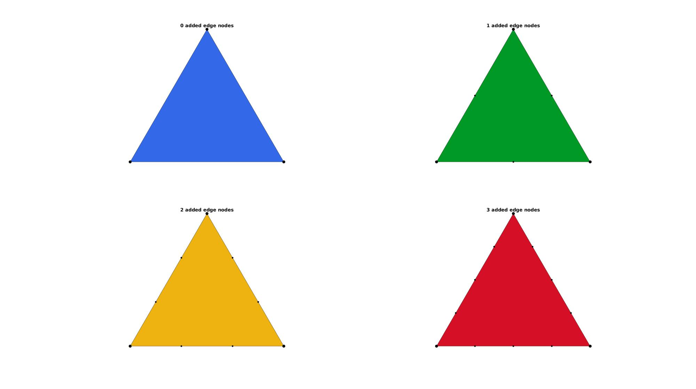
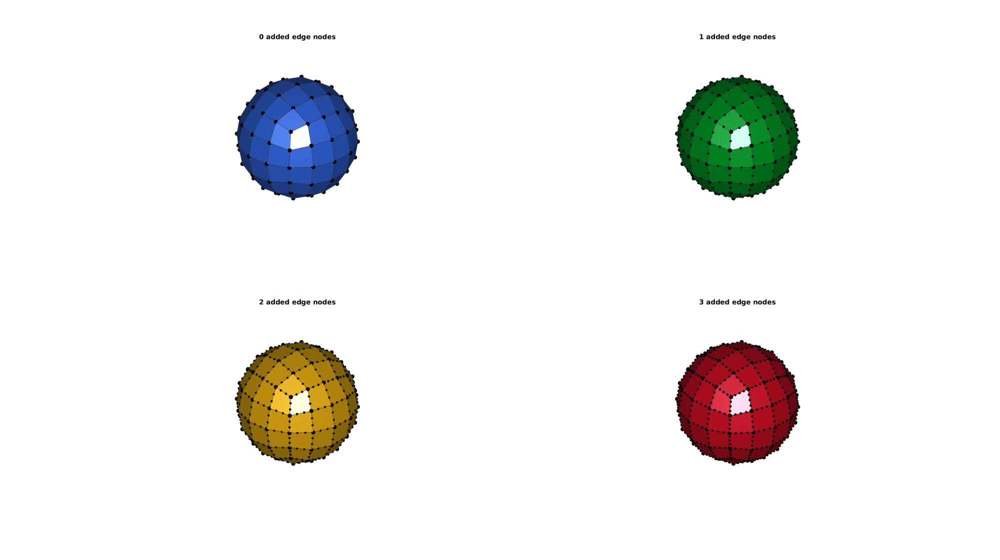
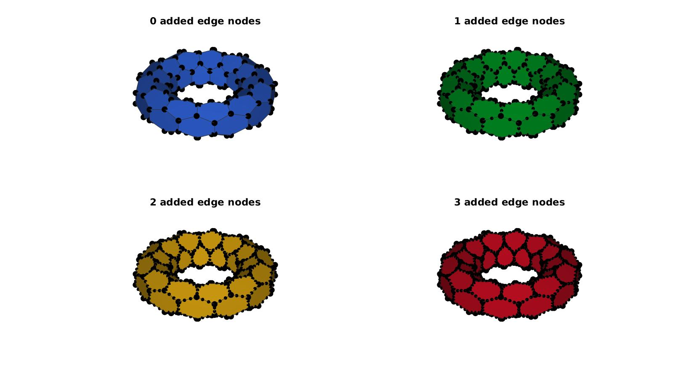

subEdge
Below is a demonstration of the features of the subEdge function
Contents
Syntax
[Fs,Vs]=subEdge(F,V,n,uniqueOpt);
Description
The subEdge function enables refinement of the edges of patch
Examples
clear; close all; clc;
Plot Settings
fontSize=15; faceAlpha=1; edgeColor=0.2*ones(1,3); edgeWidth=1.5; markerSize=35; markerSize2=20;
Refining the edges of a triangle
V=[0 0 0; 1 0 0; 0.5 sqrt(3)/2 0]; F=[1 2 3]; n=0:1:3; %Number of added edge nodes pColors=gjet(numel(n)); cFigure; for q=1:1:numel(n) [Fs,Vs]=subEdge(F,V,n(q)); subplot(2,2,q); hold on; title([num2str(n(q)),' added edge nodes'],'FontSize',fontSize); gpatch(Fs,Vs,pColors(q,:),edgeColor,faceAlpha); plotV(Vs,'k.','markerSize',markerSize2); plotV(V,'k.','markerSize',markerSize); set(gca,'FontSize',fontSize); view(2); axis tight; axis equal; axis off; end drawnow;
Refining the edges of 3D patch data example 1
[F,V]=quadSphere(2,1); n=0:1:3; %Number of added edge nodes pColors=gjet(numel(n)); cFigure; for q=1:1:numel(n) [Fs,Vs]=subEdge(F,V,n(q)); subplot(2,2,q); hold on; title([num2str(n(q)),' added edge nodes'],'FontSize',fontSize); gpatch(Fs,Vs,pColors(q,:),edgeColor,faceAlpha); plotV(Vs,'k.','markerSize',markerSize2); plotV(V,'k.','markerSize',markerSize); set(gca,'FontSize',fontSize); view(3); axis tight; axis equal; axis off; camlight headlight; end drawnow;
Refining the edges of 3D patch data example 2
%Torus parameters r=1; %Sphere radius rc=2.5; %Central radius nr=6; nc=12; [F,V]=patchTorus(r,nr,rc,nc,'honey'); n=0:1:3; %Number of added edge nodes pColors=gjet(numel(n)); cFigure; for q=1:1:numel(n) [Fs,Vs]=subEdge(F,V,n(q)); subplot(2,2,q); hold on; title([num2str(n(q)),' added edge nodes'],'FontSize',fontSize); gpatch(Fs,Vs,pColors(q,:),edgeColor,faceAlpha); plotV(Vs,'k.','markerSize',markerSize2); plotV(V,'k.','markerSize',markerSize); set(gca,'FontSize',fontSize); view(3); axis tight; axis equal; axis off; camlight headlight; end drawnow;

GIBBON www.gibboncode.org
Kevin Mattheus Moerman, gibbon.toolbox@gmail.com
GIBBON footer text
License: https://github.com/gibbonCode/GIBBON/blob/master/LICENSE
GIBBON: The Geometry and Image-based Bioengineering add-On. A toolbox for image segmentation, image-based modeling, meshing, and finite element analysis.
Copyright (C) 2006-2020 Kevin Mattheus Moerman
This program is free software: you can redistribute it and/or modify it under the terms of the GNU General Public License as published by the Free Software Foundation, either version 3 of the License, or (at your option) any later version.
This program is distributed in the hope that it will be useful, but WITHOUT ANY WARRANTY; without even the implied warranty of MERCHANTABILITY or FITNESS FOR A PARTICULAR PURPOSE. See the GNU General Public License for more details.
You should have received a copy of the GNU General Public License along with this program. If not, see http://www.gnu.org/licenses/.